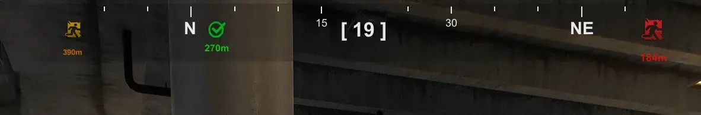
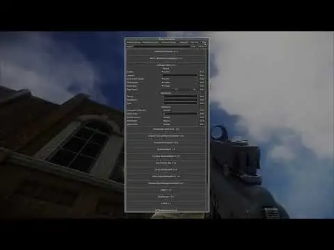
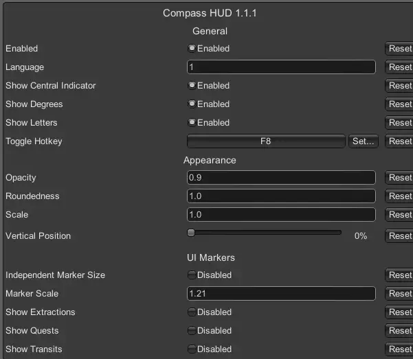

Mod
Compass HUD
- Downloads
- 2,808
- Favourites
- 24
- Mod lists
- 21
A clean and optimized horizontal compass for your tactical overlay.

Video demonstration:

Features:
Sleek Aesthetic: Just looks good
Auto-Hide: Automatically vanishes when you open your inventory or start looting to keep your UI clear.
Hotkey Toggle: Quickly hide or show the HUD mid-raid by pressing F8.
Supports both English and Russian localization layouts.
Configuration (F12):
Tweak scale, opacity, and the side-fading look on the fly.
Toggle ribbon numbers or letters independently.
The ability to toggle the display of extracts, some missions, and transitions to the following locations
Swich English and Russian localization layouts.
And other settings…
Note: Not all quest markers are displayed yet.

If you find any bugs or have suggestions for new features, I’d be happy to hear your feedback.
Version
1.1.2
SPT ~4
Fika: unknown
1,743 downloads28.5 KB
Fixed the inverted compass direction
VirusTotal: report 1
Version
1.1.1
SPT ~4
Fika: unknown
337 downloads28.5 KB
Added the ability to change the compass’s vertical position
VirusTotal: report 1
Version
1.1.0
SPT ~4
Fika: unknown
597 downloads28.0 KB
In the new version, you can enable labels for, extracts missions, and for transitions to the next locations in the settings. If you don’t like something about this version, you can revert to the old, simpler version.
VirusTotal: report 1
Version
1.0.0
SPT ~4
Fika: unknown
131 downloads12.0 KB
release (Simple, with no extra direction icons—it’s perfect for everyone. )
VirusTotal: report 1